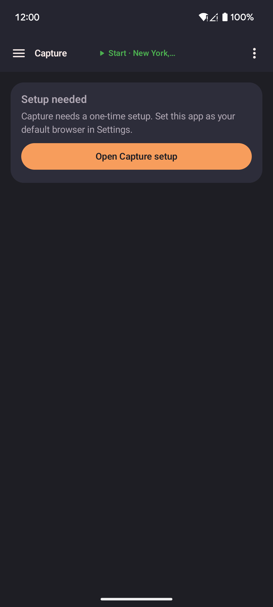

Location links
A location link is a map pin sent from another app or another person. The app opens the link in one of two ways: Automatic (no setup needed) or Capture (collect links into a list).
Share a location
- Favorites and routes: use the three-dot menu to copy or send
lat, lontext. Paste it back in later. - Map: press and hold a point, then tap Share this location. This opens the app on that spot.
Open a link (automatic)
What happens when you open a link
- The app opens or comes to the front if already running.
- The map moves to the linked location.
- A popup asks what to do.
Result: Choose Teleport here (move at once), Walk here (walk at your speed), Walk here via roads (follow real roads), or Do nothing (close without moving).
Opening links from other apps
You do not need this app's share button. If another app has a share location option, choose this app from the list. It opens the spot with the same popup.
This works for map links from many apps, including Google Maps's Share button. The app follows shortened links to find coordinates. If a link cannot be read, a short message appears at the bottom.
Capture mode
Capture collects map links from other apps into a list on your device. You can then save the list as a route. Opening a map link keeps you in your current app instead of Google Maps. The floating widget is not required.
Open Capture
Open Capture from the Home screen or the side menu. The page stays open when you leave for Android settings or another app. You can also press and hold the widget's paste button, then tap the Capture shortcut.
Set up Capture
Setup lives in Settings > Menus > Capture. Until this app is your default browser, the Capture page shows one card with an Open Capture setup button. Tap it to jump to the setup steps. Follow the steps in order.

- The rest of the Capture page appears when setup is done.
- Tap Default browser. Set this app as your default browser. On Samsung phones, the popup may do nothing. Open Android's default apps settings and pick this app there.
- Go back to Settings. It checks by itself and moves to the next step.
- In this app's Android settings, turn on supported links. The app cannot check this step. Check it yourself.
- Tap Turn off Google Maps supported links. Turn off "open supported links" for Google Maps. If you skip this step, Maps links go to Maps and this app never sees them.
Result: After setup, the Capture switch, List and Jump options, the captured list, and Save as route appear. Your earlier captured points come back too.
Choose what captured links do
- Turn on Capture mode.
- Choose List, Jump, or both.
- If the list has points, choose Clear to start again or Keep to add to the list.
If Capture mode is off, links pass through. Nothing is collected and your location does not change. Tap Pass-through to pick the browser that opens those links. While Capture is off, Google Maps links open in Maps first. If Maps is not installed, your chosen browser opens them.
Want to land back in your game after a link? In Settings > Menus > Capture, tap After a map link, open and pick the app. It opens after a link teleports you, or after you choose Teleport or Walk in the popup. The default is None.
| Choice | What it does |
|---|---|
| Teleport here | Moves your fake position there at once. |
| Walk here | Walks there at your current speed. |
| Walk here via roads | Follows real roads. |
| Do nothing | Closes the popup. Your position does not change. |
Collect and save a route
- Tap a map link in another app.
- List adds the point. Jump moves you there. A short message confirms it. The other app stays open.
- Open Capture to see your list in an orange box, in capture order.
- Use the controls above the route name field.
- Type a route name and tap Save as route. You need at least two points.
Result: The route appears under Routes.
| Control | What it does |
|---|---|
| Copy | Copies the captured list into a new route draft. |
| Last | Removes the newest point. |
| Clear | Empties the list. |
| Keep | Keeps the list after saving a route. |
| Pass-through | Chooses the browser for links when Capture is off. |
| Optimize proximity | Reorders points so each stop is near the last. On by default when you copy or save. |
| Keep original | Saves points in capture order without reordering. |
| Save as route | Saves the list as a new route. |
Tapping the same link twice in a row adds it once. Tapping an earlier point again adds it again, so a route can loop.
Turn off Capture
Open Settings > Menus > Capture and tap Restore default browser. Tick the confirm box and tap Restore.
Capture turns off and Android's default apps screen opens. Pick your usual browser there. The app cannot do this for you. Your captured points and pass-through browser choice stay.
URL format (for developers)
Links open the app on a spot and show the popup with choices. To learn more, see Share a location.
The link format is:
https://locationjoystick.shrtcts.fr/?lat=LAT&lon=LON| Parameter | Type | Valid range | Description |
|---|---|---|---|
lat | decimal | −90 to 90 | Latitude |
lon | decimal | −180 to 180 | Longitude |
Example:
https://locationjoystick.shrtcts.fr/?lat=35.6762&lon=139.6503You can build these links yourself for scripts or automation.
- Both
latandlonare required. The app ignores a link lacking either one. - The app ignores a link with coordinates outside the valid range.
- No key or sign-in is needed.
- A second format also works:
locationjoystick://open?lat=LAT&lon=LON. Both formats work the same way. Use thehttps://link when sharing with other people.